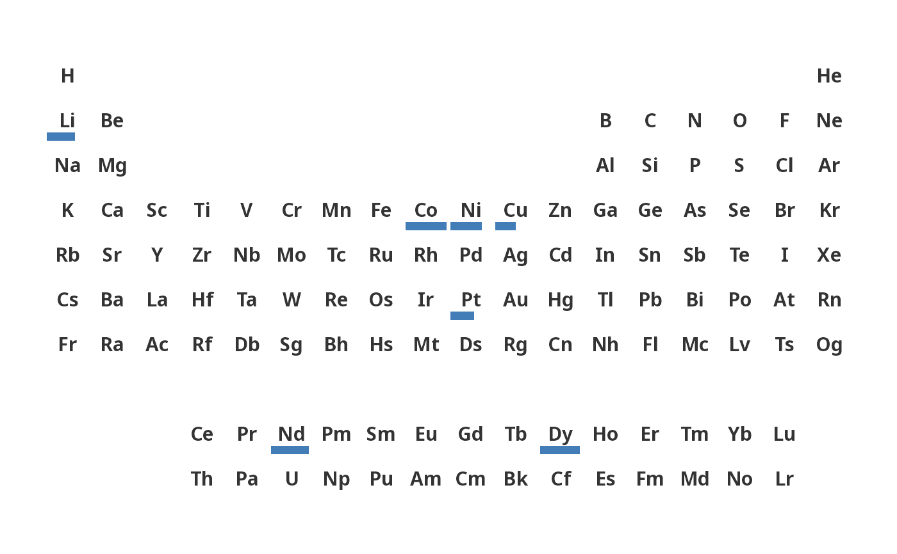
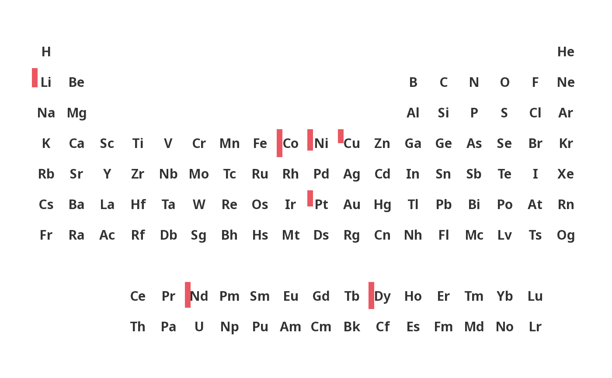

Maps a continuous value to the length of a bar drawn inside each element tile. The bar occupies a fixed thickness along the chosen edge and grows in length proportionally to the normalised value. All tiles are drawn in a neutral background so the bars are the primary visual signal.
Usage
ggPSE_bar(
data = NULL,
value_col = NULL,
symbol_col = "symbol",
bar_side = "bottom",
bar_color = "#2166ac",
bar_alpha = 0.85,
bar_thickness = 0.2,
color_na = "#ffffff",
tile_border = "transparent",
legend_title = NULL,
show_atomic_number = FALSE,
base_size = 10,
limits = NULL
)Arguments
- data
A data frame containing element symbols and a value column. If NULL, a blank table is drawn.
- value_col
Character. Column in data to map to bar length.
- symbol_col
Character. Column in data containing element symbols. Default "symbol".
- bar_side
Character. Edge from which the bar grows. One of "bottom" (default), "top", "left", or "right".
- bar_color
Hex fill color for bars. Default "#2166ac".
- bar_alpha
Numeric. Bar opacity 0-1. Default 0.85.
- bar_thickness
Numeric. Thickness of the bar as a fraction of the tile. Default 0.2 (20 percent of tile height/width).
- color_na
Hex color for tile backgrounds. Default "#ffffff".
- tile_border
Hex color for tile borders. Default "transparent".
- legend_title
Ignored: the bar plot has no legend. Kept so that existing calls keep working; a warning is given if it is set.
- show_atomic_number
Logical. Show atomic numbers. Default FALSE.
- base_size
Numeric. Base font size in pt. Default 10.
- limits
Numeric vector of length 2,
c(lower, upper): the values that correspond to an empty and a full-length bar. Values outside are drawn clipped (with a warning). DefaultNULLusesc(min(0, min(x)), max(x)).
Details
By default the bars start at zero, so their length is proportional to the
value (twice the value, twice the length). If the values contain negative
numbers the bars start at the minimum instead. Use limits to choose
the scale yourself, e.g. limits = range(x) to start at the smallest
value (that value then has no visible bar). The plot has no legend.
Examples
supply_risk <- data.frame(
symbol = c("Li", "Co", "Nd", "Dy", "Pt", "Ni", "Cu"),
risk = c(0.62, 0.91, 0.84, 0.88, 0.52, 0.70, 0.45)
)
# Bar growing from the bottom
ggPSE_bar(supply_risk, value_col = "risk")

# Bar growing from the left
ggPSE_bar(supply_risk, value_col = "risk",
bar_side = "left", bar_color = "#e63946")

# Start the bars at the smallest value instead of zero
ggPSE_bar(supply_risk, value_col = "risk", limits = range(supply_risk$risk))